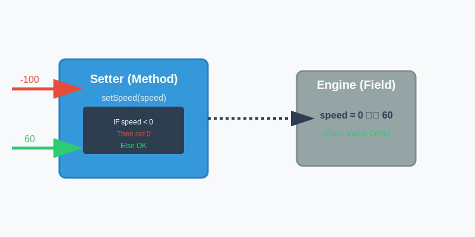

6.14 Getter와 Setter (안전한 데이터 관리)
6.14.1 직접 접근의 위험성과 데이터 무결성
객체가 가진 데이터(필드)는 그 객체의 핵심 정보입니다. 만약 외부에서 마음대로 이 데이터를 뜯어고칠 수 있다면 심각한 문제가 생길 수 있습니다.
예를 들어 자동차의 속도(speed)를 생각해 봅시다. 물리적으로 속도는 음수(-)가 될 수 없습니다. 그런데 누군가 실수로 속도를 -100으로 설정한다면? 현실 세계라면 자동차가 고장 나거나 사고가 날 것입니다. 프로그래밍에서도 마찬가지로 객체의 데이터가 논리에 맞지 않는 상태가 되는 것을 “무결성(Integrity)이 깨졌다”고 합니다.
비유: 본넷 열고 엔진 만지기 자동차를 운전할 때 가속 페달을 밟는 것이 아니라, 본넷을 열고 엔진의 연료선을 직접 당기는 것은 매우 위험합니다. 필드에 직접 값을 대입하는 것은 이처럼 위험한 행동입니다.

💻 코드 예시
// 위험한 코드! (누구나 엔진을 직접 만질 수 있음)
myCar.speed = -100;
🔍 코드를 다시 한번 원리와 동작을 살펴봅니다
myCar.speed필드에-100이라는 값을 직접 대입(=)하고 있습니다.- 속도는 음수가 될 수 없지만, 컴파일러는 문법적으로 숫자를 넣는 것이니 막지 않습니다.
- 결과적으로 객체 내부에 잘못된 데이터가 저장되고, 객체는 고장 난 상태(무결성 훼손)가 됩니다.
6.14.2 Setter: 검증과 필터링 (가속/브레이크 페달)
이러한 문제를 막기 위해 자바에서는 필드를 private으로 감추어 외부 접근을 차단하고, 대신 안전한 통로(메소드)를 제공하는 방식을 사용합니다. 이때 데이터를 변경하는 안전한 통로가 바로 Setter(설정자)입니다.
Setter는 외부에서 값을 받아 필드에 저장하기 전에, “이 값이 유효한가?”를 검사(검증)하는 메소드입니다. 만약 잘못된 값이 들어오면 이를 차단하거나 적절한 기본값으로 바꿔줄 수 있습니다.
비유: 자동차 페달 운전자가 페달을 밟으면 자동차 내부 장치가 안전한 범위 내에서 속도를 조절하듯이, Setter는 잘못된 값이 들어오면 이를 걸러냅니다.

💻 코드 예시
// 안전한 코드 (메소드를 통해 데이터 변경)
public void setSpeed(int speed) {
if (speed < 0) {
this.speed = 0; // 음수가 들어오면 0으로 강제 설정 (보호)
return;
}
this.speed = speed; // 유효한 값일 때만 필드에 저장
}
🔍 코드를 다시 한번 원리와 동작을 살펴봅니다
- 메소드 호출: 외부에서는
speed = -100대신setSpeed(-100)을 호출해야 합니다. - if 문 (검문소): 메소드 내부의
if (speed < 0)문장이 값의 유효성을 검사합니다. - 데이터 보호: 음수 값이 들어오면 필드에 저장하지 않고
0으로 바꾸거나 무시하여, 필드(this.speed)를 안전하게 지킵니다.
6.14.3 Getter: 가공과 반환 (자동차 계기판)
Getter(접근자)는 필드에 저장된 값을 읽어서 외부로 전달하는 메소드입니다. 단순히 값을 리턴할 수도 있지만, 필요한 경우 값을 가공해서(단위를 바꾸거나 포맷팅해서) 보여줄 수 있습니다.
비유: 자동차 계기판 엔진 내부에서는 복잡한 기계값으로 속도를 관리하지만, 운전자에게는 보기 편한
km/h숫자로 보여주는 것과 같습니다.

💻 코드 예시
// 내부 데이터 가공해서 전달
public double getSpeed() {
// 내부에서는 mile 단위로 관리하더라도, 외부에는 km 단위로 보여줄 수 있음
double km = speed * 1.6;
return km;
}
🔍 코드를 다시 한번 원리와 동작을 살펴봅니다
- 정보 은닉: 외부에서는
speed필드가 실제로 어떻게 저장되어 있는지(단위가 무엇인지) 알 필요가 없습니다. - 데이터 가공:
getSpeed()메소드가 내부의 값을* 1.6하여 보기 편한 형태(km)로 바꿔서 줍니다. - 읽기 전용: Getter만 있고 Setter가 없다면, 외부는 값을 읽을 수만 있고 고칠 수는 없는 읽기 전용(Read Only) 객체가 됩니다.
6.14.4 Getter/Setter 작성 규칙
자바에서는 Getter와 Setter를 작성할 때 따르는 약속(관례)이 있습니다.
| 종류 | 리턴 타입 | 메소드 이름 규칙 | 예시 | 설명 |
|---|---|---|---|---|
| Setter | void |
set + 필드명(첫 글자 대문자) |
setSpeed(...) |
값을 설정 |
| Getter | 일반 타입 | get + 필드명(첫 글자 대문자) |
getSpeed() |
값을 반환 |
| Getter | boolean |
is + 필드명(첫 글자 대문자) |
isStop() |
상태 확인 |
💻 코드 예시 (전체)
Car.java
package ch06.sec14;
public class Car {
// 1. 필드는 private으로 보호 (외부 접근 차단)
private int speed;
private boolean stop;
// 2. Getter 메소드 (값 읽기)
public int getSpeed() {
return speed;
}
// 3. Setter 메소드 (값 검증 및 변경)
public void setSpeed(int speed) {
if (speed < 0) {
this.speed = 0; // 마이너스 속도는 0으로 초기화
return;
} else {
this.speed = speed;
}
}
// boolean 타입의 Getter는 'is'로 시작
public boolean isStop() {
return stop;
}
public void setStop(boolean stop) {
this.stop = stop;
if (stop == true) this.speed = 0; // 차가 멈추면 속도도 0으로
}
}
🔍 코드를 다시 한번 원리와 동작을 살펴봅니다
- Private 필드 Declaration:
speed와stop필드는private이므로Car클래스 외부에서 안 보입니다. - Public 메소드 Open: 대신
public으로 열려 있는get...,set...메소드를 통해서만 대화할 수 있습니다. - 안전한 제어:
setStop(true)가 호출되면 단순히stop상태만 바꾸는 게 아니라,speed = 0으로 만드는 추가적인 안전 조치(로직)가 함께 동작합니다. 이것이 캡슐화의 장점입니다.